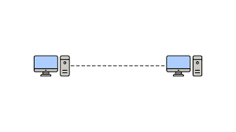

Redes de Computadora

|
¿Ques un red de ordenadores?
una red e ordenadores se refiere a dispocitivos de computacion
interconestadoas que puedes untercamciar datos y compartir recursos entresi: Los didpocitivos de la redutilizan un sistema de regla, llamada protocolos de comunicacion, para ransmitir informacion atraves de tecnilogias fidicas o inalambricas.
|
Red de área metropolitana (MAN)
Formada por un conjunto de redes LAN cercanas geográficamente (alrededor de 50 Km) entre sí a alta velocidad. Por lo tanto, una MAN permite que dos nodos remotos se comuniquen como si fueran parte de la misma red de área local.
Red de área amplia (WAN)
Es una red de comunicaciones de datos que enlazan una amplia área geográfica (país, continente, el mundo) y que utiliza a menudo las instalaciones de transmisión proporcionadas por los portadores comunes (microondas y satélites) para alcanzar grandes distancias.
Red de área local (LAN)
Es un conjunto de equipos que pertenecen a la misma organización y están conectados dentro de un área geográfica pequeña (menor de 1 Km) mediante una red, generalmente con la misma tecnología (la más utilizada es Ethernet).
|

|
Topologia punto a punto (P2P)
Una red punto a punto, o una topología de puntos, es la red más fácil de entender y el tipo de topología de red más básico. Son simplemente dos nodos que están conectados por un único enlace. Los datos viajan ida y vuelta entre estos dos endpoints. Si bien este es el tipo de red más fácil de configurar, su simplicidad es su propia desventaja. Una topología punto a punto no es aplicable a la mayoría de los casos de uso modernos.
|

|
Topologia de bus
En una red de bus, cada nodo está conectado a un solo cable, como paradas de bus que se bifurcan desde una ruta de bus. Toda la transmisión de datos fluye a través de esa única conexión central. Debido a que todo está conectado en línea recta a partir de un cable central, es una topología rentable y fácil de configurar y agregar nuevos nodos.
|

|
Topologia de anillo
En una red de anillo, los nodos y enlaces se organizan en un anillo. Cada nodo tiene exactamente dos vecinos. En una red de este tipo, los repetidores se emplean para garantizar que los datos puedan llegar a los nodos que están más alejados entre sí en el anillo. Los datos generalmente fluyen unidireccionalmente en una red de anillo.Este tipo de redes son baratas de instalar y ampliar, y los datos fluyen rápidamente dentro de la red. Pero una falla de un solo nodo puede colapsar toda la red. Las redes de doble anillo se emplean para protegerse contra este tipo de fallas.
|

|
Topologia de estrlla
En una red de estrella, todos los nodos están conectados a un hub central. Los nodos se colocan alrededor de ese hub central en una forma que se asemeja aproximadamente a una estrella. Este tipo de topología facilita la resolución de problemas con un nodo en particular. Si falla un solo nodo, el resto de la red no se ve afectada. Dicho esto, si el hub central deja de funcionar, toda la red deja de funcionar con él. En una red de estrella, el rendimiento de toda la red depende del hub central y de las conexiones a este.
|

|
Topologia de arbol
Esta topología permite que más dispositivos se conecten a un centro de datos central, lo que acelera el flujo de datos. Al igual que en una red de estrella, identificar problemas con nodos individuales es relativamente fácil.Es útil pensar en una topología de árbol como una combinación de una red de bus y una red de estrella. En una topología de árbol, sigue habiendo un hub central que lo conecta todo, pero en lugar de nodos individuales que se ramifican desde ese nodo raíz central, se trata de otras redes de estrella. Esta topología permite que más dispositivos se conecten a un centro de datos central, lo que acelera el flujo de datos. Al igual que en una red de estrella, identificar problemas con nodos individuales es relativamente fácil.
|
|
|
Toplogia de malla
En una red de malla, cada dispositivo está conectado al menos a otro nodo de la red. En una red de malla completa, cada nodo está conectado a todos los demás nodos. En una red de malla parcial, solo algunos de los nodos se conectan directamente entre sí, mientras que otros necesitan pasar a través de nodos adicionales para llegar al nodo objetivo.
Dado que los nodos pueden comunicarse directamente entre sí, en lugar de a través de un hub central, la comunicación en una red de malla suele ser muy rápida. Un gran ejemplo de una red de malla es Internet en sí, donde cada computadora es un nodo en una red proporcionada por diferentes proveedores de servicios de Internet que también se conectan entre sí.
|
|
|
Topologia Hibrida
Una topología de red híbrida es cualquier tipo de red que emplea una combinación de topologías. Una red de árbol que combina una red en estrella y una red de bus es un tipo de topología híbrida.
Las redes híbridas ofrecen flexibilidad y ayudan a las organizaciones a diseñar una topología que satisfaga específicamente sus necesidades. Sin embargo, crear una arquitectura de red personalizada puede ser un desafío y puede requerir más cableado y dispositivos de red, lo que aumenta los costos de mantenimiento.
|
Alambricos
|
|
Cable trenzado (UTP)
El cable UTP es una clase de cable que está conformado de pares de conductores o hilos eléctricos, sin embargo, el usado en las conexiones de red LAN, presentan 4 pares de conductores que se enlazan entre ellos, en forma helicoidal y con distintos colores que significan códigos particulares para cada uno.
Permite la conexión simple en red de los dispositivos y minimiza las interferencias que causan problemas de comunicación. Son fundamentales para que las señales se desplacen desde el dispositivo origen hacia el dispositivo destino de manera adecuada, y así haya una óptima comunicación.
|
|
|
Cable coaxial
Línea de transmisión de dos conductores, con un conductor central circundado por un tubo metálico exterior o blindaje de malla. El conductor interno se sostiene por alguna forma de aislamiento dieléctrico, que puede ser sólido, plástico expandido o semisólido. Los soportes semisólidos son discos de polietileno, cintas helicoidales o tiras de plástico envueltas helicoidalmente. En algunos diseños se usan cuentas aisladoras, alfileres de soporte o tubos de plástico engarzados periódicamente. Soporta 1000 MBPS
|
|
|
Fibra optica
Un cable de fibra óptica es un cable de red que contiene hilos de fibra de vidrio dentro de una carcasa aislada. Están diseñados para redes de datos y telecomunicaciones de larga distancia y alto rendimiento. Los cables de fibra óptica están compuestos por filamentos de vidrio, cada uno de ellos con capacidad para transmitir datos digitales modulados en ondas de luz. La fibra óptica es la mejor forma de transmisión de datos por cable conocida, ya que ocupa poco espacio, es liviana y sumamente flexible. La fibra óptica está compuesta de filamentos de fibra de vidrio de alta pureza, que transmite señales de luz y cuyo grosor es similar al de un cabello humano. Necisita un hilo para transmitir y otro peere recivir
Monomodo: Es un tipo de fibra óptica diseñada para transmitir señales a través de un único modo de luz. Su núcleo es muy pequeño, de aproximadamente 8 a 10 micras, lo que permite minimizar la dispersión modal y mantener la calidad de la señal en largas distancias. Pueden transmitir una distacioa de 40km o más; se isa tele comunicaciones y redes truncadas.
Multimodo: Es un tipo de fibra óptica diseñada para transmitir múltiples modos de luz a través de su núcleo, que es más grande que el de la fibra monomodo (generalmente entre 50 y 62.5 micras). Esto permite que varias señales viajen simultáneamente, pero con más dispersión, lo que limita la distancia de transmisión. Puede transmitir una distancia de 600m.
|
Inalambricos
Las redes inalambricas se utilizan en el hogar, en el transporte, en la telefonía móvil, en la radiodifusión, en la exploración espacial y en las empresa, seria muy costoso haver una medio de transmicion alambricas y seria dificil por las ubicaciones, se puede impedir la tranmicion por algunos aspectos tanro noturales como urbanos.
|
|
Infrarrojos
Una red por infrarrojos es un sistema de comunicación que utiliza luz infrarroja para transmitir datos entre dispositivos. Este tipo de red es común en controles remotos, sensores y algunas tecnologías de transferencia de archivos, como IrDA (Infrared Data Association).
Las redes por infrarrojos tienen ventajas, como la seguridad (porque la señal no atraviesa obstáculos como paredes) y el bajo consumo de energía. Sin embargo, tienen limitaciones: requieren línea de visión directa entre dispositivos y tienen un rango de transmisión relativamente corto. La desventaja es que si hay un abjeto entre los dispocitivos noo se podran transmitir la señal.
|
|
|
Microondas
Una red por microondas es un tipo de comunicación inalámbrica que utiliza ondas de radio de alta frecuencia para transmitir datos, voz o video a través de largas distancias. Se emplea en telecomunicaciones, enlaces de internet, transmisión de televisión y comunicación satelital.
|
|
|
Ondas setelitales
Una red por ondas satelitales es un sistema de telecomunicaciones que utiliza satélites para transmitir señales de comunicación, ya sea de datos, voz o video. Estas redes permiten conectar áreas remotas o de difícil acceso donde las infraestructuras terrestres no son viables.
|

|
WIFI
Una red Wi-Fi es una tecnología que permite la conexión inalámbrica entre dispositivos a través de ondas de radio. Funciona mediante un router que emite señales Wi-Fi, las cuales son recibidas por otros dispositivos como teléfonos, computadoras o tablets. Estos dispositivos se comunican con el router para acceder a internet o compartir información dentro de la misma red.
|
Elaborado por Carmen